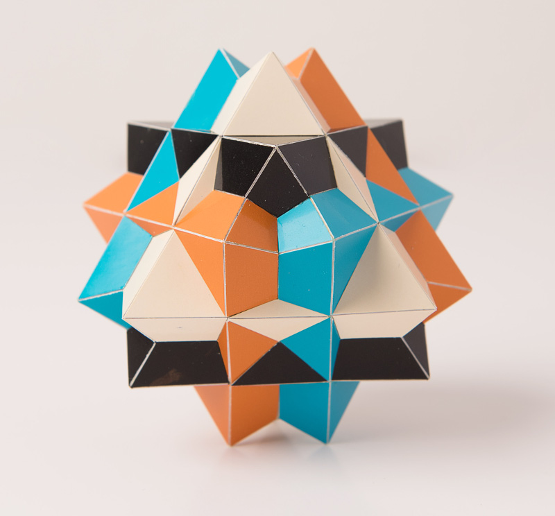

Compound of Four Octahedra

Here is another uniform compound of uniform polyhedra. This is a compound of four octahedra and the whole compound has the same symmetry as one Octahedron (S4xI). There is only one possibilty to do this. The whole model can be fit into a cube, but the picture was taken in such a way that this isn't too obvious. You can easily see this when playing around with the interactive 3D model on the right.
This is a model that is easy to build and you will only need to cut and paste 144 pieces. With the material I use, it isn't that easy to get all the edges straight and you can see in the picture that I didn't do a very good job everywhere, e.g. with the black edges at the top. The blue and the orange edges below and parallel to those black edges are a bit better though. I finished this model at the end of January 2019.
The whole model is rigid and reminds me a bit of a crystal. For this reason I was thinking of building this in one colour only, but in the end I used colours that clearly distinguishes the four octahedra.
The picture is copyrighted by PhotoArt Studio Hörby
Last Updated
2019-02-03